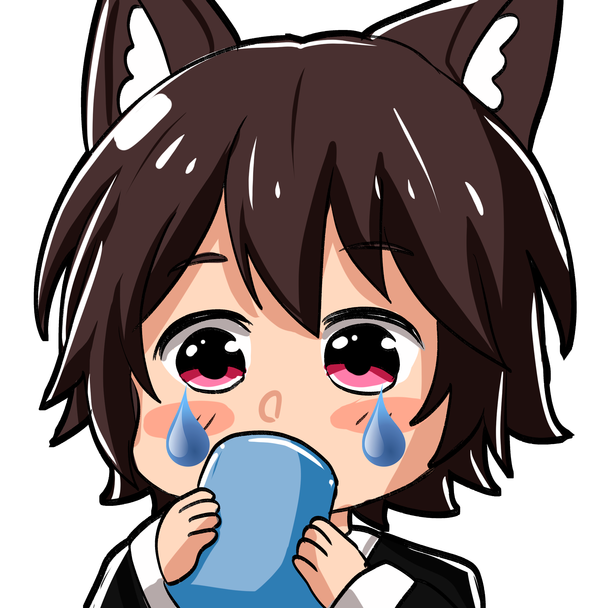

Cada vez que entraba a VR, se hacian mas comunes los encuentros entre estos, y luego del cierre del directo del chupistream en VR, ambos se encontraron,
pero como todo no puede ser color de rosa, pues pasó algo que causo 2 emociones en Milton.
Bueno al final de todo, creo que ya no tengo ninguna esperanza.
